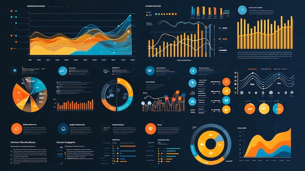
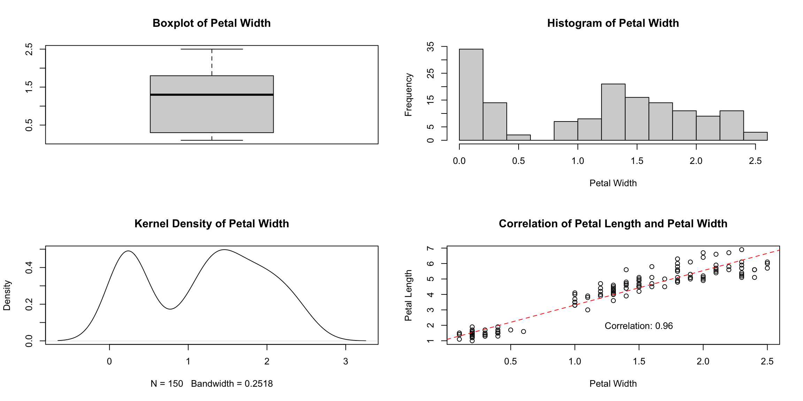
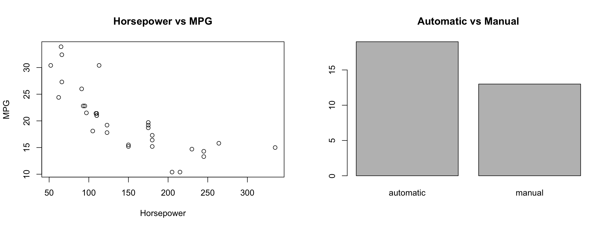

![]()
Sepal.Length Sepal.Width Petal.Length Petal.Width Species
1 5.1 3.5 1.4 0.2 setosa
2 4.9 3.0 1.4 0.2 setosa
3 4.7 3.2 1.3 0.2 setosa
4 4.6 3.1 1.5 0.2 setosa
5 5.0 3.6 1.4 0.2 setosa
6 5.4 3.9 1.7 0.4 setosaPSTAT 10 Data Science Principles
Lecture 6: Dataframes
August 22, 2026
Introduction
🔁 Review: Lecture 5
👈 Last lecture we explored some problem solving methods:
- Algorithmic Thinking
- Branching Logic
- Iterative Logic
- Recursive Logic
- Famous Algorithms:
- Binary Search
- Bubble Sort
👀 Outline: Lecture 6
👇 This lecture we will shift our focus to real data, specifically:
- Storing Data
- Factor Data

Dataframes
🗃️ Real Data
So far the data we have considered has typically been very simplistic:
- Scalar values
- Defined vectors, matrices and arrays
- Basic lists without much nuance
The only “real” data we have considered is the iris dataset.
🗂️ Dataframes
- When we load this data to our environment we see it is saved as a dataframe object.
- Dataframes are one of the most commonly used data types in R due to them helpfully combining the following useful attributes:
- Dimensional (matrix structure)
- Varied datatypes

📦 Tidyverse
A key package for handling and manipulating dataframes is tidyverse, which is a very large library consisting of several sub-libraries including:
tibble— dataframe / tibble manipulationtidyr— data cleaning and processingggplot2— plotting
We will always load the tidyverse library for lectures going forward, however we will often not load the dataset libraries as they have a frustrating habit of redefining functions.
Some dataset libraries we shall be using include:
MASS(install.packages("MASS"))datasauRus(install.packages("datasauRus"))
📥 Loading Data
Loading data from a library
- To load data from a library (for example the
abbeydataset from theMASSpackage) we use the::syntax. - Whenever we load data we must use the assignment operator
<-
to store it in some suitably named object.
📌 The :: syntax allows us to avoid loading the entire MASS library.
head() Function
- Above we used the
head()function.- This function is very useful for initial inspection of a dataset.
- It returns the first \(n\) rows of a dataframe (default \(n=6\)).
🏗️ data.frame() Function
Defining dataframes in R
- We can also manually construct a dataframe from scratch using the
data.frame()function. - This function takes one or more vectors as input, treating each as a column.
- It also lets us control row names, column names, and how data types are handled.
The data.frame() Function
- We replace
...with our data. - Row and column names have defaults.
- There are lots of options and arguments — we will look through the main ones.
🧱 Constructing a Dataframe
The simplest way to construct a data frame is by defining each column as a vector, for example:
Then we can construct a dataframe using the data.frame() function:
Indexing
We can access a specific column of a dataframe using the $ syntax:
Example — Constructing a Dataframe
Let’s build a slightly more complex dataframe — this time with four columns of student records:
📥 Loading Real Data
The main purpose of dataframes is to allow us to manipulate real world data sets. For example, consider the cabbages dataset.
We can use the following functions to make an initial inspection of the dataframe:
View()— opens dataframe in new tabhead()— (already seen) view the first rows of the dataframetail()— view the bottom rows of the dataframe
🔍 Inspecting Data
Cult Date HeadWt VitC
1 c39 d16 2.5 51
2 c39 d16 2.2 55
3 c39 d16 3.1 45 Cult Date HeadWt VitC
58 c52 d21 1.0 68
59 c52 d21 1.5 66
60 c52 d21 1.6 72Dataframe Functions
📊 Summarizing Dataframes
Often we wish to construct summary statistics for columns of the data frame (i.e. compute the mean, variance, minimum, maximum etc). To do so we use the summary() function.
🏛️ Structure of Dataframes
Additionally, we may wish to understand the structure of a dataframe, i.e. the dimensions, what datatype is in each column, etc.
We can do so using the str() function.
🎯 Indexing Dataframes
Numerical Indexing
We index a dataframe in the same way as a matrix, by using an ordered pair \((i,j)\) where \(i\) is the row number and \(j\) is the column number:
[1] c39
Levels: c39 c52 Cult Date HeadWt
3 c39 d16 3.1 Cult Date
1 c39 d16
2 c39 d16🔪 Slicing Dataframes
Slicing Dataframes
We can return entire rows / columns by leaving the column / row index blank respectively:
Cult Date HeadWt VitC
3 c39 d16 3.1 45 [1] 51 55 45 42 53 50 50 52 56 49 65 52 41 51 41 45 51 45 61 42 54 59 66 54 45
[26] 49 49 55 49 68 58 55 67 61 67 68 58 63 56 72 52 70 57 58 47 56 72 63 54 60
[51] 78 75 70 84 71 72 62 68 66 72🔁 Dataframe Behavior
Functions on Dataframes
Once we have indexed rows / columns they behave as vectors, and we can perform calculations / apply functions as we have been doing in previous lectures.
[1] 2.593333[1] 60Some dataframe-specific functions we will explore in upcoming lectures include:
order()subset()apply()
Exploratory Data Analysis
🔎 Exploratory Data Analysis
Real world data is messy, and so whenever we obtain new data / start some data analysis we always begin with exploratory data analysis (EDA).
Exploratory Data Analysis (EDA)
Exploratory Data Analysis (EDA) is the process of analyzing data sets to summarize their main characteristics, often using visual methods.
- It is a crucial step in any data analysis process, as it helps to:
- Uncover patterns, spot anomalies, test hypotheses, and check assumptions with the help of summary statistics and graphical representations.
We aim to investigate:
- How spread out is our data?
- Are any variables correlated?
- Do any values look wildly out of place? (outliers)
- Is any data missing?
📈 Data Visualization Tools
Pictures paint a thousand words! Often the most intuitive way to explore data is using visualizations.
Boxplots
- Visually show the minimum, maximum, mean, upper and lower quartiles of the data.
Histograms
- Visualize the empirical distribution of the data by grouping into bins and showing the number of counts per bin.
Density Plots
- Similar to histograms but visualize an approximate density.
Correlation Plots
- A scatter plot of one variable against the other with a line of best fit, measuring the linear relationship between the two.
📌 We will explore each of these visualization tools in more detail in the following slides.
📈 Example — Data Visualization
We produce the following series of plots using the iris dataset.
data("iris")
par(mfrow=c(2,2)) # plot a 2x2 grid of plots
# boxplot
boxplot(iris$Petal.Width, main = "Boxplot of Petal Width")
# histogram
hist(iris$Petal.Width, main = "Histogram of Petal Width",
xlab = "Petal Width")
# density plot
plot(density(iris$Petal.Width), main = "Kernel Density of Petal Width")
# correlation plot
plot(iris$Petal.Width, iris$Petal.Length,
main = "Correlation of Petal Length and Petal Width",
ylab = "Petal Length",xlab = "Petal Width")
abline(lm(iris$Petal.Length ~ iris$Petal.Width), col = "red", lty = "dashed")
text(paste("Correlation:", round(cor(iris$Petal.Width, iris$Petal.Length), 2)),
x = 1.5, y = 2)📈 Example — Data Visualization

🧮 Summary Statistics — Mean & Standard Deviation
Mean
Recall that the arithmetic mean of a sample \(\vec{x}:=(x_1, ..., x_n)\) is defined by
\[ \bar x = \frac{\sum_{i=1}^nx_i}{n}. \]
Intuitively, this is giving the average value of the sample (average location of all the points).
Standard Deviation
The standard deviation of a vector \(\vec{x}:=(x_1, ..., x_n)\) is defined by
\[ s_x=sd(\vec{x})=\left(\frac{\sum_{i=1}^n(x_i-\bar{x})^2}{n-1}\right)^{1/2}. \]
Intuitively, this is computing the average distance of all points in the sample from the mean.
🧮 Summary Statistics — Covariance & Correlation
Covariance
Given two variables (vectors) \(\vec{x}=(x_1, ..., x_n)\) and \(\vec{y}=(y_1, ..., y_n)\) the covariance of \(\vec{x}\) and \(\vec{y}\) is given by
\[ Cov(\vec{x}, \vec{y})=\frac{1}{n-1}\sum_{i=1}^n(x_i-\bar{x})(y_i-\bar{y}). \]
Intuitively, this measures whether two variables tend to move together.
📌 Covariance is hard to interpret on its own since its scale depends on the units of x and y — correlation fixes this by rescaling covariance to always fall between \(-1\) and \(1\).
Correlation
\[ Corr(\vec{x}, \vec{y})=\frac{\sum_{i=1}^n(x_i-\bar{x})(y_i-\bar{y})}{\sqrt{\sum_{i=1}^n(x_i-\bar{x})^2\times\sum_{i=1}^n(y_i-\bar y)^2}}. \]
Correlation is a statistical measure that expresses the extent to which two variables are linearly related (meaning they change together at a constant rate).
🧮 Interpreting Correlation
Correlation takes a value on the interval \([-1,1]\) where:
- \(-1\) indicates perfect negative correlation (as one variable increases/decreases the other decreases/increases)
- \(0\) indicates no correlation
- \(1\) indicates perfect positive correlation (as one variable increases/decreases the other increases/decreases)
📌 We typically only note correlation values greater than 0.5 — anything lower is often not considered significant.
📌 A quick, informal note on statistical significance: seeing a correlation number doesn’t automatically mean the relationship is “real.” Significance is really just asking, “could I have gotten a number this big just by chance, from a small or noisy sample?” With very little data, even a large correlation can be a fluke; with lots of data, even a small one can be trustworthy. We won’t cover the formal test for this in the course — just keep the question in the back of your mind whenever you see a correlation!
⚙️ Statistics in the Background
These statistics can be time consuming to compute, and fortunately R has built-in functions for all three:
mean()— computes the meansd()— computes the standard deviationcor()— computes the correlation
💪 Exercise — Why Visualize?
02:00
Evaluate the following dataset:
dataset x y
1 dino 55.3846 97.1795
2 dino 51.5385 96.0256
3 dino 46.1538 94.4872
4 dino 42.8205 91.4103
5 dino 40.7692 88.3333
6 dino 38.7179 84.8718- Using the functions from the previous slide, compute the mean, standard deviation and correlation of the
xandycolumns. - Why might this dataset be a good example of why data visualization is important?
✅ Solution — Why Visualize?
📌 The summary statistics of dino look completely unremarkable — it’s only the visualization that reveals the hidden structure!
Categorical vs Quantitative Data
🏷️ Categorical vs Quantitative
Dataframe data can roughly be broken down into the following two categories:
- Quantitative (numerical) data; and
- Categorical (factor, non-numerical) data.
We need to use different visualization techniques for each category:

🏷️ Quantitative vs Categorical — Details
Quantitative Data Types
Quantitative data separates into two types:
- Continuous (age, height, weight, etc.)
- Can take any value in a range (e.g. 1.5, 1.51, 1.511, etc.)
- Discrete (usually counts, e.g. shoe size, number of students)
- Can only take specific values (e.g. 1, 2, 3, etc.)
- Mathematically we say the set is countable.
Categorical Data
Any non-numerical data is considered categorical:
- Numbers can be considered categorical.
- Classification into groups (1, 2, 3, etc.); identification numbers.
- No ordering is necessary.
🔠 Factors
Factors in R
- R has excellent functionality for dealing with categorical data, using a specific datatype called
factors:- The distinct categories of the data are called levels.
- Each element of the data is assigned to the correct level.
🖼️ Visualization Tools by Data Type
We have to adjust our exploratory data analysis (EDA) based on whether we are considering categorical (factor) data or quantitative (numerical) data.
Categorical Plots
- Bar charts
- Bar height/length shows the count in each category.
- Pie charts
- A circle sliced up to show each category’s share of the whole.
- Mosaic plots
- Tile sizes show how two categorical variables relate to each other.
Quantitative Plots
- Histograms
- Bars show how values are distributed across bins.
- Box plots
- Summarizes spread via quartiles, median, and outliers.
- Scatter plots
- Points show the relationship between two numeric variables.
- Line plots
- Connected points track how a value changes in order (e.g. over time).
📊 Histograms
Summary
✅ Topics Covered
🤔 Today we looked into:
- Real Data
- Loading Data
- Summarizing Data
- Visualizing Data
- Exploratory Data Analysis
- Quantitative vs Categorical
- Factor Data
- Histograms
📅 Next Class
🤩 Next class we will look more carefully at dataframes, their problems and the solution, namely:
- Tibbles
- Tidyverse Package